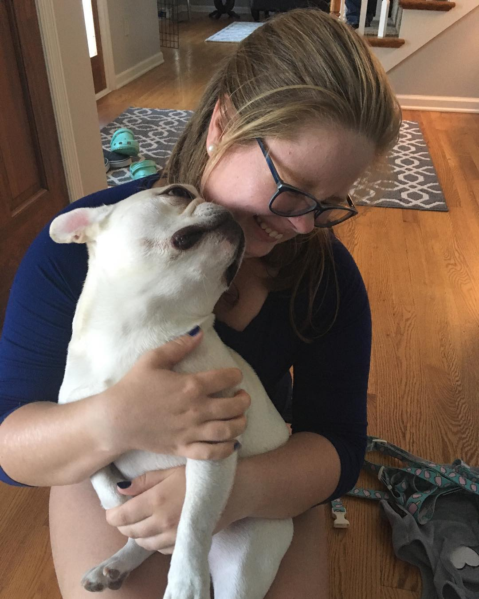
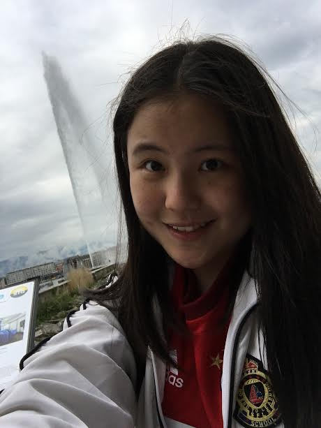

About Us!
Home Page About Us Experiences Blog
AJ Morrissett, 15, Milwaukee, Wisconsin
AJ is in the Class of 2020 at the Hill School. She is currently enrolled in an Intro to Programming course, Integrated Science 1, and Integrated Math 11. In the future, she wants to go through the Computer Science program at Hill and study programming in college and as a career path. She likes to spend her time making really bad puns.
Nethmin Liyanage, 14, Marion, Illinois

Nethmin is in the Class of 2020 at The Hill School. She is currently in Engineering 1, Integrated Science 1, and Integrated Math 31, and plans on completing the 3-year engineering program, the 2-year integrated science course, and the 2-year integrated math 31 course. She is also involved with Girls Science Interactive, and hopes to continue her involvement in STEM throughout college. She enjoys doing many things in her spare time, but does not enjoy shaving her legs.
Juliana Ma, 16, Shanghai, China
Juliana is in the Class of 2020 at The Hill School. She is currently in Engineering 1, Integrated Science 1, and Integrated Math 41. She wants to take advantage of Hill’s maths and science programs as much as possible. She is excited to know more computer science and wants to major in math or physics in college. Her favorite activity is roasting people while listening to classical music.